Real Estate:
Overview
Paper 4, 2023-24 Lent, Lecture 5
Prof Thies Lindenthal
htl24@cam.ac.uk
February 2024
## Putting things into perspective<span class='subtitle'><br>Real Estate is bigger than equities and debt securities combined. </span> <iframe src="https://e.infogram.com/8e44d4d8-db56-4272-b2c3-3bfe906b9930?src=embed" title="Total asset universe value" width="700" height="560" scrolling="no" frameborder="0" style="border:none;" allowfullscreen="allowfullscreen"></iframe>
<h2><span class="transparent70">Economy-wide risks</span><span class="subtitle transparent70"><br />Bank of England Financial Stability Report (<a href="https://www.bankofengland.co.uk/financial-stability-report/2019/december-2019">2019</a>)</span></h2> * <span class="transparent70">“<strong>The housing market can be a key source of risk to UK financial stability</strong>. In the UK, mortgages are households’ largest financial liability and lenders’ largest loan exposure in aggregate. Housing accounts for nearly half of the total assets of UK households. [...] Historically, the rapid build-up of household debt has been a key source of risk to financial and economic stability — and not just in the UK.”</span> <p class='source'><a href="https://www.flickr.com/photos/croydonclicker/51181061000">Photo ©</a></p> Notes: * The global financial crisis of 2008/2009 has highlighted the importance of real estate for our economy and financial system once more. * The sheer size of the asset class dominates national accounts and household-level balance sheets alike, both in terms of assets and liabilities. * A large section in the Bank of England’s 2019 Financial Stability Report is devoted to real estate, modelling how the housing market can be a key source of risk to UK financial stability.
<h2>Just an alternative?<span class="subtitle"><br />Real estate is a sizeable component of institutional portfolios</span></h2> * Sovereign wealth funds, insurance companies, pension funds - “My” pension scheme USS holds £4.3 billion of private RE, for instance. <p>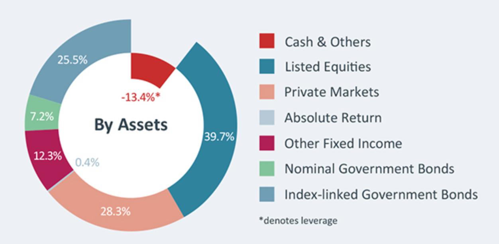</p> Notes: * The risk/return profile of real estate is absolutely relevant to the industry. * Sovereign wealth funds, insurance companies, pensions funds and other institutional investors, they are all invested in real estate. * Our pension scheme, the USS, for instance, owns private property worth 4.3 billion at the moment. * Beside the shrinking pensions, real estate affects the bottom line of most households directly.
## Real Estate <span class="subtitle"><br>Overview of Real Estate Section</span> * Aim: <br><mark>To understand economics of real estate markets and the economics of the development process</mark> * Focus is on creation of built form of cities * Focus is (mainly) on commercial real estate markets * Four lectures 1. Principles and Processes 2. Investment in Real Estate 3. Development Appraisal 4. Rents and the Occupier Market * 1 Supervision on this section, TBA
## A Different Sort of “Policy” <span class="subtitle"><br>How does this segment fit into Paper 4?</span> * Less focus on government / public sector policy * More on private sector decision-making - It’s firm policy and firm strategy! * Real estate market operation shapes cities - Bringing the “Use” back in to land use * Urban & Regional Development: A Public Dimension - Growth & regeneration has a built environment dimension - Regulation and land-use policy shape market outcomes - Real estate significant contributor to greenhouse gases * Links back to earlier lectures (and other papers) - For example Ricardo, land values and land taxes - For example discounting in considering climate change action
## <span class='darkonlight'>1980</span> <br><br><br><br> <br><br><br><br> <span class='source darkonlight'>Source: <a href='https://www.theguardian.com/cities/2016/may/10/china-pearl-river-delta-then-and-now-photographs'>The Guardian</a></span>
## <span class='darkonlight'>2015</span> <br><br><br><br> <br><br><br><br> <span class='source darkonlight'>Source: <a href='https://www.theguardian.com/cities/2016/may/10/china-pearl-river-delta-then-and-now-photographs'>The Guardian</a></span>
## <span class='darkonlight'>2023</span> <br><br><br><br> <br><br><br><br> <span class='source darkonlight'>Source: <a href='https://www.theguardian.com/cities/2016/may/10/story-of-cities-39-shenzhen-from-rural-village-to-the-worlds-largest-megalopolis'>Dowell/Getty Images</a></span>
## <span class='darkonlight'>Philadelphia<br><br>2013</span>
## Real Estate Answers<span class="subtitle"><br>Interlocking markets can explain why cities develop the way they do</span> * The Land Market - Owners sell land to developers or self-develop (or hold) * The Development Market - Developers construct new buildings to rent or sell * The Occupier Market - Businesses rent or buy space for their operational needs * The Investment Market - Investors acquire buildings for their cashflow * The Capital Markets - Financial and investment firms provide debt and equity capital
## A Conceptual Framework <span class="subtitle"><br>Often used: diPasquale & Wheaton’s Quadrant Model</span> <div class='figure'> <p>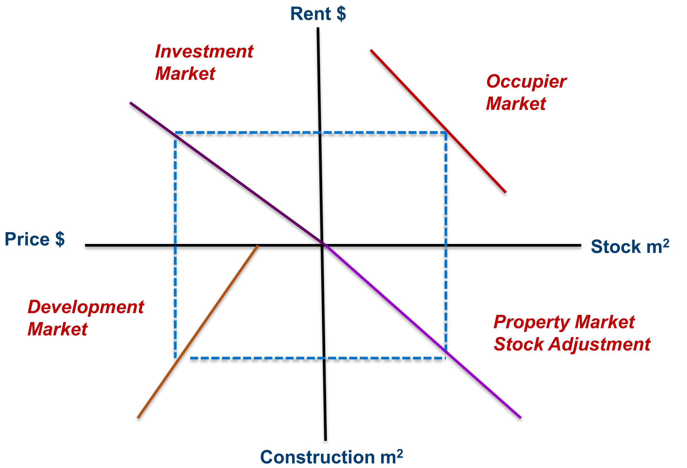</p> </div>
## Occupier Market <span class="subtitle"><br>Supply and demand for space</span> * Firms require space for business * Location factor in profitability * Supply constrained in short run? - Competing firms bid for space - The less the space, the higher the rent * But rent determines profitability - The higher the rent, the less space demanded - NB substitution effects - Hence demand curve is downward sloping * In long run: supply adjusts to demand (more in a bit)
## The Occupier Market <span class="subtitle"><br>Short-run and long-run supply adjustment</span> <div class='figure'> <p>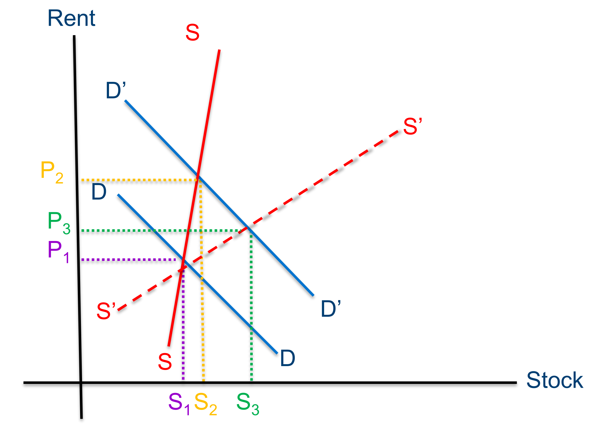</p> </div>
## The Investment Market <span class="subtitle"><br>Translating net rents to asset prices</span> <div class='figure'> <p>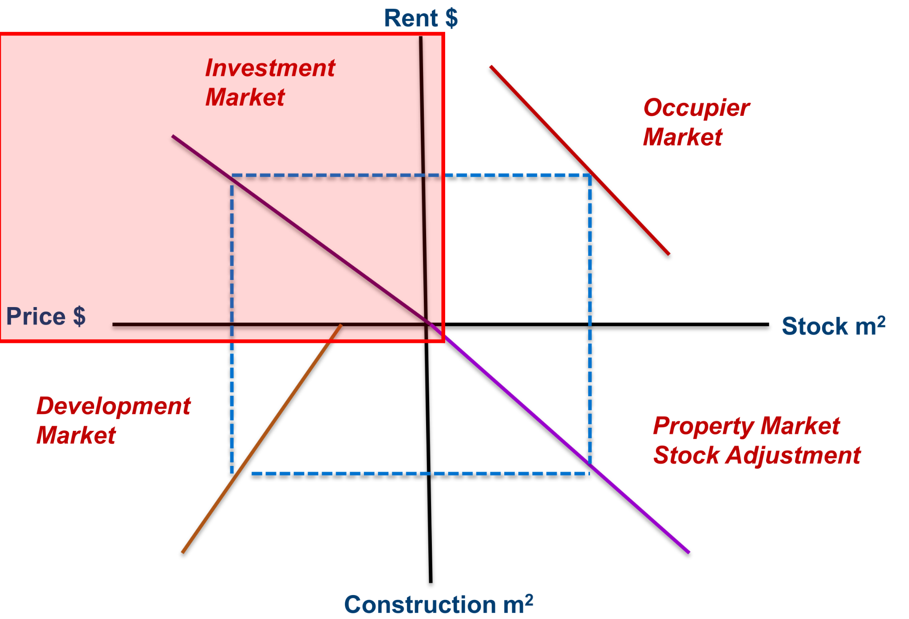</p> </div>
## The Investment Market <span class="subtitle"><br>Translating net rents to asset prices</span> * Investors buy buildings to obtain cashflow - The rental income now and in future * Investors must give up capital to buy buildings - Demand a return on their capital - Return reflects cost of capital and risks of cashflow * For a freehold property: `$ P = \frac{R}{k}$` - P is price, R is rent, k is yield or capitalisation rate - As R increases, P rises - As k increases, P falls …
## The Investment Market <span class="subtitle"><br>Translating net rents to asset prices</span> * What is k, the Yield or Capitalisation Rate? - The income return (this year) on the capital invested: If `$P = \frac{R}{k}$` then `$ k = \frac{R}{P}$` * However, rents change over time - Investors expect some growth in rents, $g$ * Investors want to make a return on their capital - Required or target rate of return, $r$ - `$r$` is the Risk Free Rate plus a Risk Premium `$r = RFR + RP$` * Freehold Property Capitalisation Rate - Cap rate `$k = r – g$` - Cap rate `$k = RFR + RP - g$` * We need some financial mathematics here … but not this week
## The Development Market <span class="subtitle"><br>Building more buildings</span> <div class='figure'> <p>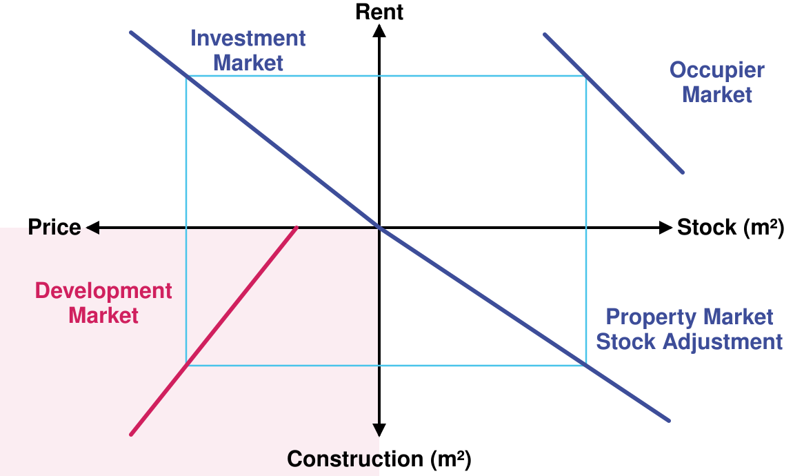</p> </div>
## The Development Market <span class="subtitle"><br>Construction of new assets</span> * Developers seek profits * They face costs—land and construction costs (or replacement cost RC) * Building is profitable when P > RC - Need to account for time taken to build - Need to account for uncertainty about prices in future * There is a minimum P to induce building * As P increases, so construction increases <span class='source'><mark>But think ahead … what does an increase in supply do to rents, and what does that imply for prices?</mark></span>
## The Adjustment Market <span class="subtitle"><br>Wear and tear / replacement</span> <div class='figure'> <p>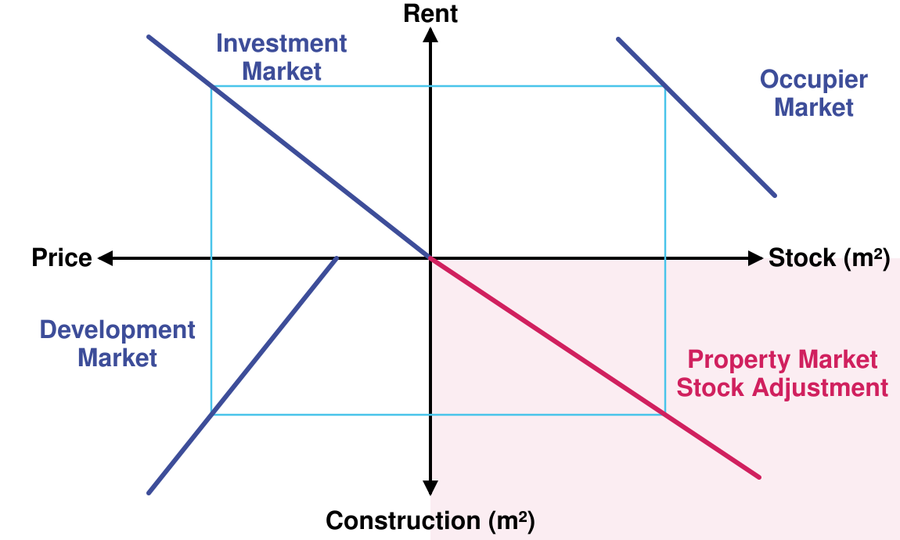</p> </div>
## The Adjustment Market <span class="subtitle"><br>Depreciation and replacement</span> * A messy but vital part of the diPasquale-Wheaton Model * There is a stock of space $S$ * New construction increases space $S_1 = S_0 + C$ * However space is subject to depreciation rate $\delta$ - Buildings become obsolete due to technological change - Old buildings may be too expensive to maintain - May need to demolish old buildings to build new ones * Hence stock adjustment is `$S_1 = S_0 + C - \delta S_0$`, or `$S_1 = (1-\delta)S_0 + C$` * In equilibrium, `$C = \delta S$`
## The Development Process (1)<span class='subtitle'><br>Reaching the development decision</span> * Development is inherently multidisciplinary * The “Grasskamp Spiral” * A use looking for a site? - Client business seeking a site - Developer with particular specialism * A site looking for a use? - Economic and political/social factors - What is highest and best use for site? - What does public authority want? - What is permitted on the site?
## The Development Process (2)<span class="subtitle"><br>Stages in the process (are they strictly sequential?)</span> * Feasibility analysis * Capital raising (equity, debt) * Site assembly * Detailed design and planning consents * Site clearance and infrastructure * Construction phase * Finishing, fit out, soft landscaping * Marketing and leasing or sale * Stabilised operation * Obsolescence and redevelopment …
## The Development Process (3) <span class="subtitle"><br>The Role of the Public Sector & Institutions (finally some policy!)</span> * Land use ownership and rights - Who owns the land? - Who owns the right to determine land use? - Is the gain from development “earned” by the landowner? * Land Use Planning System - Dealing with market failure - Ensuring efficiency at the urban / regional scale - Ensuring equity at the urban / regional scale - Capturing value increases from public expenditure * Externalities and Environment - What is societal impact of development? - How can that be regulated or directed?
## <span class='transparent70'> Key Points</span> <span class="subtitle"><br></span> * <span class='transparent70'>Built form results from mix of economic and political decisions over time</span> * <span class='transparent70'>Outcome is “path dependent” – the existing built form creates inertia, slows adjustment to new urban forms</span> * <span class='transparent70'>Series of interlocking markets: Space (Occupier) Market, Investment Market, Development Market, Land Market, Capital Markets … Linkages and feedback</span> * <span class='transparent70'>Interaction between these determines outcomes within institutional/regulatory structures</span> * <span class='transparent70'>Strong public policy element to operation of markets</span>
<h2>Half a millennium of space markets <span class="subtitle"><br />500 years of Western European economic history</span></h2> * Rent indices (nominal) for 7 cities <p>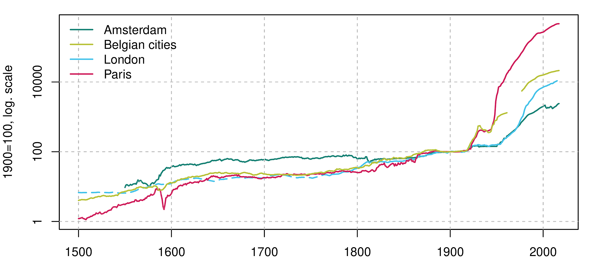</p> Notes: * and here the are: Rent indices for 7 cities covering more than 500 years. * Such a long time series on urban housing markets might be a world record. I am not sure.
<h2> Real Rents<span class="subtitle"><br />Inflation is a relatively modern phenomenon</span></h2> * Rents deflated with a general consumer price index <p>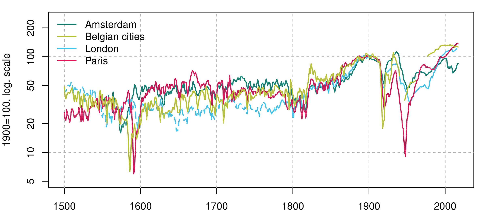</p> Notes: * This is the same indices, but deflated with a general consumer price index. * It turns out that real rent indices are great sensors of the cities' economies, they track the ups and downs of our cities very closely.
<h2>Rents are a sensor<span class="subtitle"><br />... of a city's fortune</span></h2> * Disasters: Sack of Antwerp ("Spanish Fury"), 1576<p>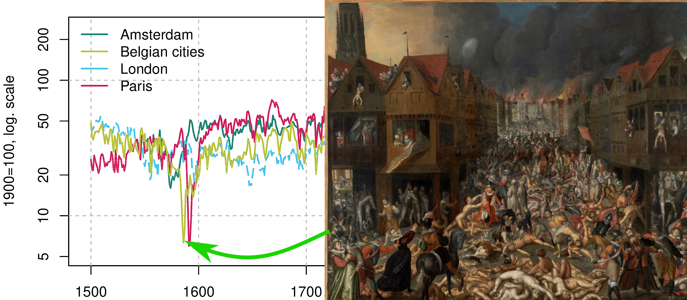</p> Notes: * Let's start with a drastic example. * It is reassuring to see that a massive disasters like the sack of Antwerp in 1576 are clearly identifiable in our indices.
<h2>War & regulation<span class="subtitle"><br />Another disaster: Siege of Paris, 1590 </span></h2> * First example of rent control in our 7 cities (not in history, though).<p>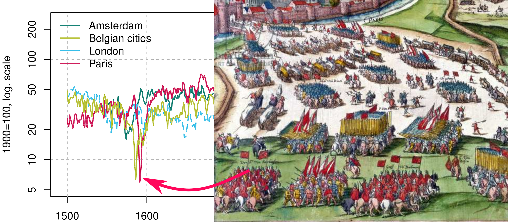</p> Notes: * I won't go through 500 years of European history, but let me give one more example: Rents collapsed during the siege of Paris in 1590. This was, of course, directly caused by Henry the fourth bombarding the city from the outside. * But in addition, rents were cut during the first instance of rent regulation that we observe in our sample. This rent regulation regime was short-lived and we basically observe free markets up to WWI. * Having several centuries unregulated rent data is unique and can really help to come up with counterfactuals for more regulated housing markets.
<h2>Shared trends<span class="subtitle"><br />Centuries of stability, followed by fundamental change</span></h2> * Rents doubled during the industrial revolution <p>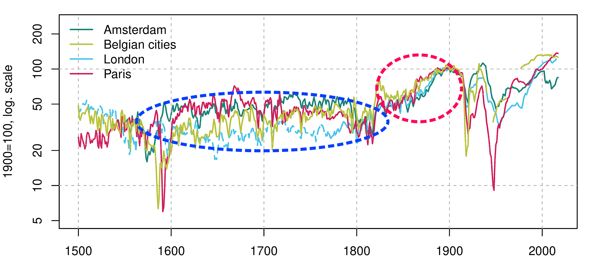</p> Notes:
## Investment markets <span class="subtitle"><br/>Are prices and returns in equilibrium, at least in the long run?</span> <div class='figure'> <p class='title'>City of London, 1920–2022</p> <p>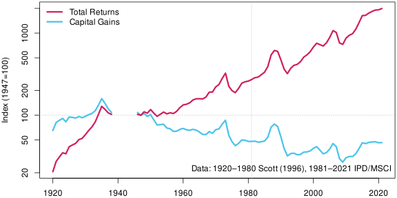</p> </div> * Total returns = income + capital gains. For City of London, income dominates. Notes: * And this not just a residential real estate story. * For commercial space we see a similar pattern. This figure gives you the returns for CRE right in the City of London. The green line shows that very limited long-run capital gains have been achieved since WWII—in real terms. But the total return was solid due to the income delivered by these properties. * So, rents are crucial. But our understanding of rents is even worse than our understanding of prices. Giacoletti, Sagi etc. they all work on capital returns but hardly anybody investigates rents. * That's why I think that a new working paper that I co-authored is so exciting.
## Manhattan<span class="subtitle"><br/>120 years without an upward trend in commercial real estate prices?</span> <div class='figure'> <p class='title'>CRE Price Index (real), New York (1899–2022)</p> <p><p>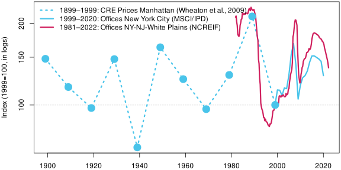</p></p> <p class="source">Sources: <a href="https://onlinelibrary.wiley.com/doi/abs/10.1111/j.1540-6229.2009.00235.x">Wheaton, Baranski & Templeton (2009)</a>; MSCI/IPD; NCREIF</p> </div>
## Growth US house prices?<span class="subtitle"><br/>100 years of flat house prices. Booms are relatively recent.</span> <div class='figure'> <p class='title'>US house price index (real), 1890–2022</p> <p>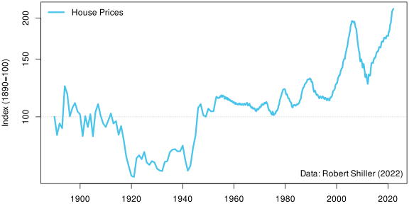</p> <p class=source>Data: <a href='http://www.econ.yale.edu/~shiller/data.htm'>Robert Shiller</a></p> </div>
## Norway?<span class="subtitle"><br/>In the long run... real prices are flat!</span> * Norwegian real house prices, 1819-2003 (Eitrheim & Erlandsen, 2003) <p>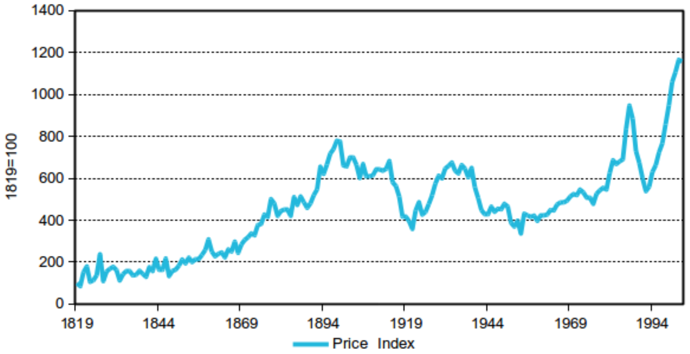</p>
## Beijing?<span class="subtitle"><br/>No price gains</span> * House prices, Beijing. 1644–1840 (<a href="https://www.sciencedirect.com/science/article/abs/pii/S0014498313000132">Raff, Wachter & Yan, 2013</a>) <p>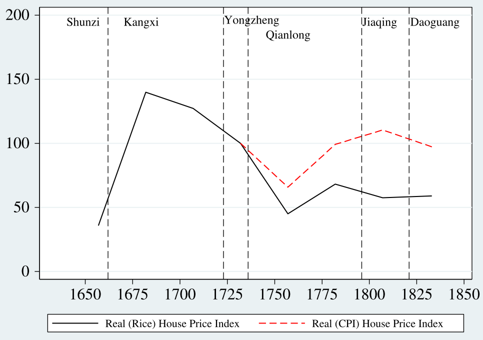</p>
## Netherlands?<span class="subtitle"><br/>In the very long run... real prices are flat!</span> <div class="figure"> <p class="title">Amsterdam Property Prices, 1650–2005</p> <p><p>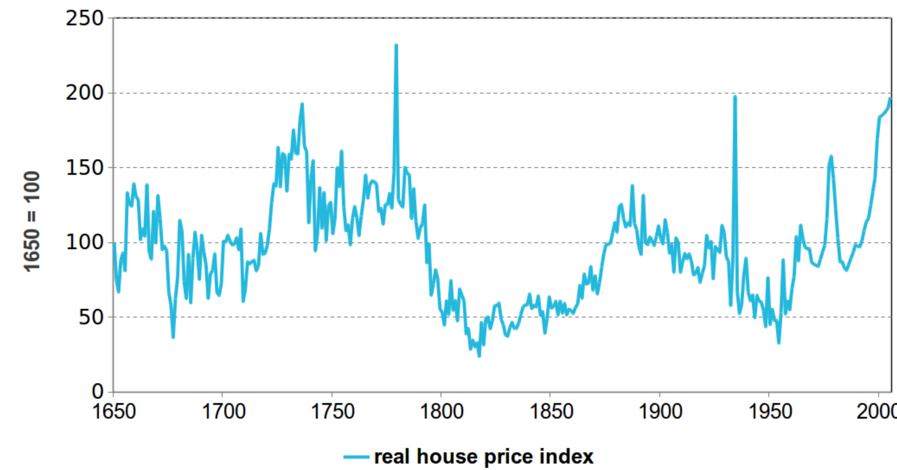</p></p> <p class="source">Source: Eichholtz (1997)</p> </div>
## Prime location<span class="subtitle"><br/>In 1672—and today.</span> <p class="source">Gerrit Adriaenszoon Berckheyde: Herengracht, Amsterdam, 1672</a> <p> </p> <p> </p> <p> </p> <p> </p> <p> </p> <p> </p>
<h2>Investment Market<span class="subtitle"><br />From rents to prices: Residential real estate</span></h2> <div class='figure'> <p class='title'><a href='https://onlinelibrary.wiley.com/doi/abs/10.1111/jmcb.12011'>Rent/Price for Amsterdam, 1650–2005</a></p> <p>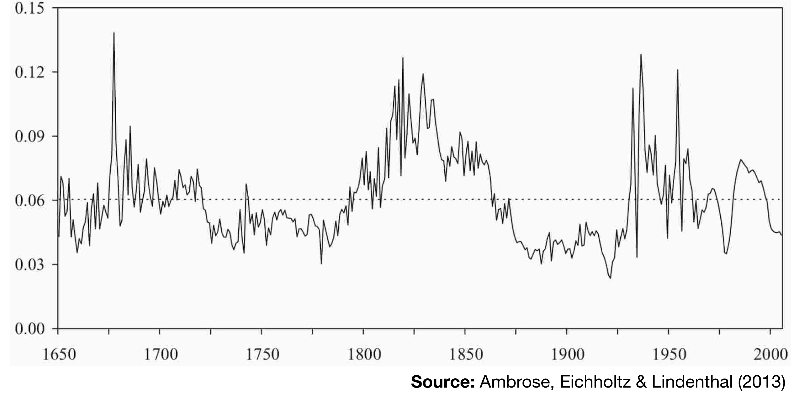</p> </div>
<h2>Supply response<span class="subtitle"><br />Cities are more dynamic than they seem, they can reconfigure the real estate</span></h2> <div class='figure'> <p class='title'>Herengracht Canal, Amsterdam</p> </div>
<h2>Long run equilibria—and policy<span class="subtitle"><br />A housing affordability revolution?</span></h2> <div class='figure'> <p class='title'>Rents, wages and affordability in 7 European cities</p> <p>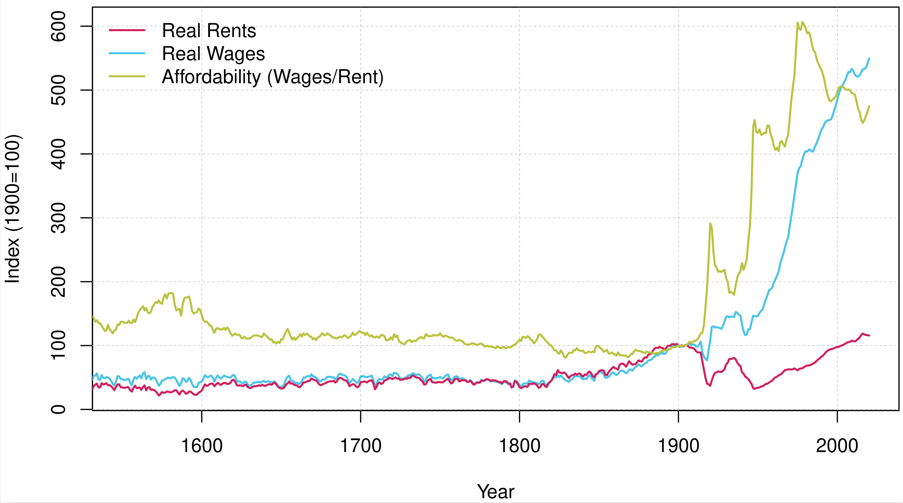</p> </div>
<h2>Q & A<span class="subtitle"><br />Surely, there are questions?</span></h2> <p> </p> <p> </p> <p> </p> <p> </p> <p><span class='source'><a href="https://www.flickr.com/photos/vic_206/37365289430">Photo ©</a></span></p> Notes: